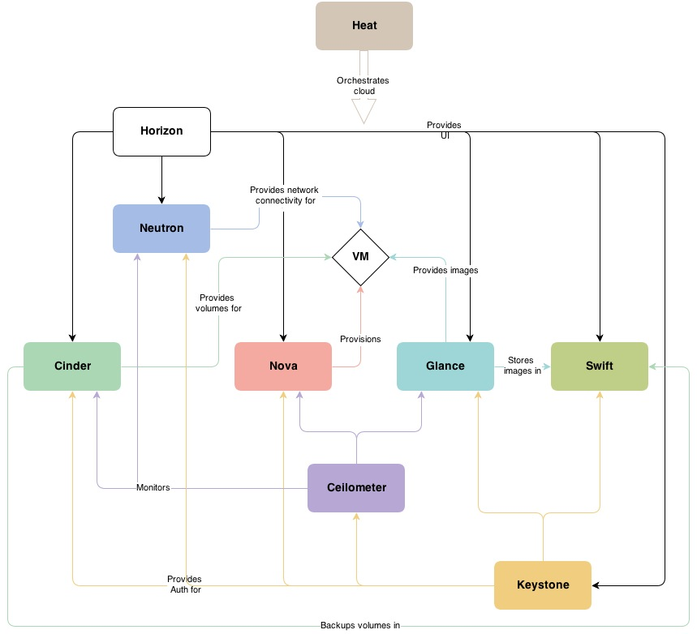

云计算三种模式 iaas云
IaaS（Infrastructure as Service）基础设施及服务
提供给消费者的服务是对所有计算基础设施的使用
包括处理CPU、内存、存储、网络和其他基本的计算资源
用户能够部署和运行任意软件，包括操作系统和应用程序
IaaS通常分为三种用法：公有云，私有云和混合云
paas云
PaaS（platform-as-a-Serevice）平台即服务
以服务器平台或者开发环境按需提供的服务
PaaS不仅仅是单纯的基础平台，话包括对该平台的技术支持，应用系统开发、优化等服务
简单地说，PaaS也可以说是中间件即服务
saas云
SaaS（Software-as-a-Service）软件即服务
是一种通过Internet提供软件的模式
软件厂商将应用软件部署在服务器上，客户可以根据自己的实际需求，通过互联网自助购买所需的应用软件服务
SaaS云服务也可以说是一种软件云服务
openstack概述 起源 Ø openstack是一个由NASA（美国国家航天局）和Rackspace合作研发并发起的项目
Ø openstack是一套Iaas解决方案
Ø open stack是一个开源的云计算管理平台
Ø 以Apache许可证为授权
Ø openstack组件

Horizon组件 Ø Horizon为open stack服务的Web控制面板，他可以管理实例，镜像，创建密钥对，对实例添加卷，操作Swifi容器等
Ø Horizon具有如下一些特点：
Ø 实例管理：创建，终止实例，查看终端日志，VNC连接，添加卷等
Ø 访问与安全管理：创建完全群组，管理密钥对，设置浮动IP等
Ø 镜像管理：编辑或删除镜像
Ø 管理用户，配额及项目用途
Keystone组件 Ø 为其它服务提供认证和授权的集中身份管理服务
Ø 也提供集中目录服务
Ø 支持多种的身份认证模式，如密码认证，令牌认证，以及AWS（亚马逊Web服务）登录
Ø 为用户和其它服务提供了SSO认证服务
Nova组件 Ø 在节点上用于管理虚拟机的服务
Ø Nova是一个分布式的服务，能够与Keystone交互实现认证，与Glance交互实现镜像管理
Ø Nova被设计成在标准硬件上能够进行水平扩展
Ø 启动实例时，如果有则需要下载镜像
Glance组件 Ø 扮演虚拟机镜像注册的角色
Ø 允许用户直接存储拷贝服务器镜像
Ø 这些镜像可以用于新建虚拟机模板
swift组件 Ø 这是对象存储组件
Ø 对于大部分用户来说，swift组件不是必须的
Ø 只有存储数量到一定级别，而且是非结构化数据才有这样的需求
Neutron组件 Ø 一种软件定义网络服务
Ø 用于创建网络，子网，路由器，管理浮动ip地址
Ø 可以实现虚拟交换机，虚拟路由器
Ø 可由于在项目中创建VPN
Cinder组件 Ø 为虚拟机管理存储卷服务
Ø 为运行在Nova中的实例提供永久的块存储
Ø 可以通过快照进行数据备份
Ø 经常应用在实例存储环境中，如数据库文件
项目及用户管理 项目
项目是由admin角色的用户创建的
项目：一组隔离的资源和对象。由一组关联的用户进行管理
根据配置的需求，项目对应一个组织，一个公司或是一个使用客户等
项目中可以有多个用户，项目中的用户用来管理虚拟资源
项目相关的信息保存在数据库中
默认项目
缺省情况下，packstack安装的openstack中有两个独立项目
admin：为admin账户创建的项目
services：与安装的各个服务相关联
用户
用户在openstack中用于身份认证
管理用户admin一般在packstack安装过程中创建
其他用户由管理员用户创建，并制定可以访问的项目
非管理员用户创建后，保存到数据库中
用户权限 非管理员用户具以下权限
启动实例
创建卷和快照
创建镜像
分配浮动IP
创建网络和路由
创建防火墙以及规则、规则策略
查看网络拓扑、项目使用概况等
Glance镜像即云主机类型 镜像管理
在红帽openstack平台中，镜像指的是虚拟磁盘文件
磁盘文件总应该已经安装了可用的操作系统
镜像管理功能由Glance服务提供
它形成了创建虚拟机实例最底层的块结构
镜像可以由用户自己创建，也可以通过红帽官方站点下载
镜像磁盘格式
raw：非结构化磁盘镜像格式
vhd：VMware、Xen、Microsoft、Virtual Box等均支持的磁盘格式
vmdk：是Vmware的虚拟磁盘格式
vdi：VirtualBox虚拟机和QEMU支持磁盘格式
iso：光盘数据内容的归档格式
qcow2：QEMU支持的磁盘格式。空间自动扩展，并支持写时复制copy-on-write
cow介绍
Copy On Write 写时复制
直接映射原始盘的数据内容
当数据有修改要求时，再修改之前自动将旧数据拷贝存入前端盘后，对前端盘进行修改
原始盘始终是只读的
云主机类型
云主机类型就是资源的模板
它定义了一台云主机可以使用的资源，如内存大小、磁盘容量和CPU核心数等
管理员可以自定义云主机类型
Neutron网络管理
安全组
安全组用于控制对虚拟机实例的访问
安全组在高层定义了哪些网络及哪些协议是被授权可以访问虚拟机实例的
每个项目都可以定义自己的安全组
项目成员可以编辑默认的安全组规则，也可以添加新的安全组规则
每个规则都有出和入两个方向
所有项目都有一个默认的default安全组
Oenstack搭建 基础环境配置 （1）设置控制节点主机名为controller，设置计算节点主机名为compute；
（2）修改hosts文件将IP地址映射为主机名；
（3）关闭防火墙；
（4）将selinux改为宽容模式；
1 2 3 4 5 6 7 8 9 10 11 12 13 14 15 16 [root@controller ~] [root@compute ~] [root@controller ~] 127.0.0.1 localhost localhost.localdomain localhost4 localhost4.localdomain4 ::1 localhost localhost.localdomain localhost6 localhost6.localdomain6 192.168.1.10 controller 192.168.1.20 compute [root@controller ~] [root@compute ~] [root@controller ~] [root@controller ~] SELINUX=disabled
YUM源配置 1 2 3 4 5 6 7 8 9 10 11 12 13 14 15 16 [root@controller ~] [root@controller ~] [root@controller ~] Created symlink from /etc/systemd/system/multi-user.target.wants/vsftpd.service to /usr/lib/systemd/system/vsftpd.service. [root@compute ~] [centos] name=centos baseurl=file:///opt/centos gpgcheck=0 [iaas] name=iaas baseurl=ftp://controller/iaas/iaas-repo gpgcheck=0
时间同步 在controller节点上部署chrony服务器，允许其他节点同步时间，启动服务并设置为开机启动；在compute节点上指定controller节点为上游NTP服务器，重启服务并设为开机启动。
1 2 3 4 5 6 7 8 9 10 11 12 13 14 15 16 17 18 19 20 21 22 23 24 25 [root@controller ~] [root@compute ~] [root@controller ~] server master iburst allow 192.168.0.0/16 local stratum 10[root@compute ~] server master iburst [root@controller ~] [root@compute ~] [root@compute ~] 210 Number of sources = 1 MS Name/IP address Stratum Poll Reach LastRx Last sample =============================================================================== ^* controller 11 6 17 8 -5897ns[ -18us] +/- 399us
计算节点分区 在compute节点上利用空白分区划分2个20G分区
1 2 3 4 5 6 7 8 9 10 11 12 13 14 15 16 17 18 19 20 21 22 23 24 25 26 27 28 29 30 31 32 33 34 35 36 37 38 39 40 41 42 43 44 [root@compute ~] 欢迎使用 fdisk (util-linux 2.23.2)。 更改将停留在内存中，直到您决定将更改写入磁盘。 使用写入命令前请三思。 命令(输入 m 获取帮助)：n Partition type : p primary (3 primary, 0 extended, 1 free) e extended Select (default e): p 已选择分区 4 起始 扇区 (973088768-1468006399，默认为 973088768)： 将使用默认值 973088768 Last 扇区, +扇区 or +size{K,M,G} (973088768-1468006399，默认为 1468006399)：+20G 分区 4 已设置为 Linux 类型，大小设为 20 GiB 命令(输入 m 获取帮助)：w The partition table has been altered! Calling ioctl() to re-read partition table. WARNING: Re-reading the partition table failed with error 16: 设备或资源忙. The kernel still uses the old table. The new table will be used at the next reboot or after you run partprobe(8) or kpartx(8) 正在同步磁盘。 [root@compute ~] Warning: 无法以读写方式打开 /dev/sr0 (只读文件系统)。/dev/sr0 已按照只读方式打开。 [root@compute ~] NAME MAJ:MIN RM SIZE RO TYPE MOUNTPOINT sda 8:0 0 700G 0 disk ├─sda1 8:1 0 3G 0 part /boot ├─sda2 8:2 0 361G 0 part │ ├─centos_openstack-root 253:0 0 300G 0 lvm / │ ├─centos_openstack-swap 253:1 0 1G 0 lvm [SWAP] │ └─centos_openstack-home 253:2 0 60G 0 lvm /home ├─sda3 8:3 0 100G 0 part └─sda4 8:4 0 20G 0 part sr0 11:0 1 4.2G 0 rom /opt/centos
openstack环境搭建 在控制节点和计算节点上分别安装iaas-xiandian软件包，根据表2配置两个节点脚本文件中的基本变量（配置脚本文件为/etc/xiandian/openrc.sh）
服务名称
变量
参数/密码
Mysql
root
000000
Keystone
000000
Glance
000000
Nova
000000
Neutron
000000
Heat
000000
Zun
000000
Keystone
DOMAIN_NAME
demo
Admin
000000
Rabbit
000000
Glance
000000
Nova
000000
Neutron
000000
Heat
000000
Zun
000000
Neutron
Metadata
000000
External Network
eth1（第二块网卡名）
1 2 3 4 5 6 7 8 9 10 11 12 13 14 [root@controller ~] [root@compute ~] [root@compute ~] [root@compute ~] ·········· [root@compute ~]
把controller节点加入集群 1 2 3 4 5 6 7 8 9 10 11 12 13 14 15 16 17 18 19 20 21 22 23 24 25 [root@controller images] HOST_IP=192.168.1.10 HOST_PASS=000000 HOST_NAME=controller HOST_IP_NODE=192.168.1.10 HOST_PASS_NODE=000000 HOST_NAME_NODE=controller [root@controller images]
nova安装完成后需要修改配置文件 1 2 3 4 5 6 7 8 [root@controller ~] virt_type=kvm virt_type=qemu [root@controller ~]
Openstack运维 openstack 命令自动补全 openstack complete > /etc/bash_completion.d/openstack && bash
Linux 系统调优 修改脏数据可用内存百分比为60，默认为30 1 2 3 4 5 6 7 8 9 10 11 12 13 [root@controller ~] vm.dirty_background_bytes = 0 vm.dirty_background_ratio = 10 vm.dirty_bytes = 0 vm.dirty_expire_centisecs = 3000 vm.dirty_ratio = 30 vm.dirty_writeback_centisecs = 500 echo 'vm.dirty_ratio = 60' >> /etc/sysctl.confsysctl -p
修改文件句柄数 Linux 服务器大并发时，往往需要预先调优 Linux 参数。默认情况下，Linux 最大文件 句柄数为 1024 个。当你的服务器在大并发达到极限时，就会报出“too many open files”。 创建一台云主机，修改相关配置，将控制节点的最大文件句柄数永久修改为 65535。
1 2 3 4 5 6 7 8 [root@controller ~] [root@controller ~] * soft nofile 65535 * hard nofile 65535 EOF
防止 SYN 攻击 修改 controller 节点的相关配置文件，开启 SYN cookie，防止 SYN 洪水攻击
1 2 3 4 5 6 7 8 9 10 11 12 13 14 15 16 17 18 [root@controller ~] net.ipv4.tcp_max_syn_backlog = 512 net.ipv4.tcp_syn_retries = 6 net.ipv4.tcp_synack_retries = 5 net.ipv4.tcp_syncookies = 1 tcp_max_syn_backlog是SYN队列的长度，加大SYN队列长度可以容纳更多等待连接的网络连接数。 tcp_syncookies是一个开关，是否打开SYN Cookie 功能，该功能可以防止部分SYN攻击。 tcp_synack_retries和tcp_syn_retries定义SYN 的重试连接次数， 将默认的参数减小来控制SYN连接次数的尽量少。 [root@controller ~] [root@controller ~]
配置controller节点禁止其他节点可以Ping它 1 2 3 4 5 6 7 8 9 10 11 12 [root@controller ~] net.ipv4.icmp_echo_ignore_all = 0 [root@controller ~] net.ipv4.icmp_echo_ignore_all = 1 [root@controller ~] net.ipv4.icmp_echo_ignore_all = 1 [root@controller ~] 1
内核优化 在使用 Linux 服务器的时候，TCP 协议规定，对于已经建立的连接，网络双方要进行四 次挥手才能成功断开连接，如果缺少了其中某个步骤，将会使连接处于假死状态，连接本身 占用的资源不会被释放。因为服务器程序要同时管理大量连接，所以很有必要保证无用的连 接完全断开，否则大量僵死的连接会浪费许多服务器资源。创建一台 CentOS7.9 云主机，修 改相应的配置文件，分别开启 SYN Cookies；允许将 TIME-WAIT sockets 重新用于新的 TCP 连接；开启 TCP 连接中 TIME-WAIT sockets 的快速回收；修改系統默认的 TIMEOUT 时间 为 30。
1 2 3 4 5 6 7 8 9 10 11 12 net.ipv4.tcp_syncookies = 1 默认为0，表示关闭 net.ipv4.tcp_tw_reuse = 1 net.ipv4.tcp_tw_recycle = 1 net.ipv4.tcp_fin_timeout = 30
数据库调优 将memcache缓存修改为128 1 2 3 4 5 6 [root@controller ~] CACHESIZE=128 [root@controller ~]
修改/etc/my.cnf 文件，完成下列要求 1.设置数据库支持大小写；
2.设置数据库缓存 innodb 表的索引，数据，插入数据时的缓冲为 4G；
3.设置数据库的 log buffer 为 64MB；
4.设置数据库的 redo log 大小为 256MB；
5.设置数据库的 redo log 文件组为 2。
1 2 3 4 5 6 7 8 9 10 11 12 13 14 15 16 17 18 [root@controller ~] MariaDB [(none)]> show variables like 'innodb_log%' ; [root@controller ~] lower_case_table_names =1 innodb_buffer_pool_size = 4G innodb_log_buffer_size = 64MB innodb_log_file_size = 256MB innodb_log_files_in_group = 2 [root@controller ~]
Keystone 服务 1 2 3 4 5 6 [root@controller ~] [root@controller ~] > --email admin@123.com tom [root@controller ~]
列出一个token 项目管理 在keystone中创建shop项目添加描述为“hello shop”，完成后使用open stack命令禁用该项目，最后使用openstack命令查看该项目
1 2 3 4 5 6 7 8 openstack project create --description "hello shop" --domain demo shop openstack project set --disable shop openstack project show shop
用户管理 使用nova命令查看admin租户的当前配额值，将admin租户的实例配额值提升到13
1 2 3 4 5 6 7 8 9 10 11 12 13 14 15 16 17 18 19 20 21 22 23 24 25 26 27 28 29 30 nova quota-class-show admin +----------------------+-------+ | Quota | Limit | +----------------------+-------+ | instances | 10 | | cores | 20 | | ram | 51200 | | metadata_items | 128 | | key_pairs | 100 | | server_groups | 10 | | server_group_members | 10 | +----------------------+-------+ nova quota-class-update admin --instances 13 nova quota-class-show admin +----------------------+-------+ | Quota | Limit | +----------------------+-------+ | instances | 13 | | cores | 20 | | ram | 51200 | | metadata_items | 128 | | key_pairs | 100 | | server_groups | 10 | | server_group_members | 10 | +----------------------+-------+
glance镜像服务 将提供 的 cirros-0.3.4-x86_64-disk.img 镜像（该镜像在 HTTP 服务中，可自行下载）上传至平台， 命名为 cirros，并设置最小启动需要的硬盘为 10G，最小启动需要的内存为 1G。 1 2 3 4 5 6 7 8 9 10 11 [root@controller ~] or [root@controller ~] [root@controller ~] > --file cirros-0.3.3-x86_64-disk.img cirros [root@controller ~]
OpenStack 开放镜像权限 使 用 OpenStack 私 有 云 平 台 ， 在 OpenStack 平台的 admin 项 目 中 使 用 cirros-0.3.4-x86_64-disk.img 镜像文件创建名为 glance-cirros 的镜像，通过 OpenStack 命令将 glance-cirros 镜像指定 demo 项目进行共享使用。
1 2 3 4 5 [root@controller ~] > --file cirros-0.3.4-x86_64-disk.img glance-cirros [root@controller ~] [root@controller ~]
后端配置文件管理 进入到 glance 后端存储目录中，使用 qemu 命令查看任意的一个镜像信息。 使用 du 命令查看 nova 主配置文件大小。
1 2 3 4 [root@controller ~] qemu-img info xxxxxxxx [root@controller ~]
请修改glance后端配置文件，将项目的映像存储限制为10G，完成后重启glance服务
1 2 3 4 5 6 7 8 bc计算出10G 1024^3*10 10737418240 vim /etc/glance/glance-api.conf (/user_storage) user_storage_quota = 10737418240 systemctl restart openstack-glance-*
OpenStack Glance 镜像管理 使用自行搭建的 OpenStack 平台。在 HTTP 服务中存在一个镜像为 CentOS7.5-compress.qcow2 的镜像，请使用 qemu 相关命令，对该镜像进行压缩，压缩后的 镜像命名为 chinaskill-js-compress.qcow2 并存放在/root 目录下。
1 2 3 4 5 6 7 8 9 10 11 [root@controller ~] -c 压缩 -O qcow2 输出格式为 qcow2 centos7_33.qcow2被压缩文件路径 compress_newdisk.qcow2压缩完成后文件路径
使用qemu-img相关命令，查询Gmirror1镜像的compat版本，然后将Gmirror1镜像的campat版本修改为0.10（该操作是为了适配某些低版本的云平台）
1 2 3 4 5 6 7 [root@controller ~] [root@controller ~] [root@controller ~]
某OpenStack云平台有两个租户，A租户与B租户，分别属于两个部门，该公司对镜像的管理比较严格， 镜像都由管理员进行上传和权限管理。通过管理员上传该镜像，并使用相关命令开放镜像权限给A租 户，B租户不可见。
1 2 3 4 5 6 7 8 9 [root@controller ~] > df58511d2c914690b48e89f1e512ae6b [root@openstack ~] df58511d2c914690b48e89f1e512ae6b accepted
改 glance 存储后端 使用赛项提供的 OpenStack 私有云平台，创建一台云主机（镜像使用 CentOS7.5，flavor 使用带临时 磁盘 50G 的），配置该主机为 nfs 的 server 端，将该云主机中的/mnt/test 目录进 行共享（目录不存 在可自行创建）。然后配置 controller 节点为 nfs 的 client 端，要求将/mnt/test 目录作为 glance 后端 存储的挂载目录。配置完成后提交 controller 控制节点的用户名、密码 和 IP 地址到答题框。
1 2 3 4 5 6 7 8 9 10 11 12 13 14 15 16 17 18 19 20 21 22 23 24 25 26 27 28 29 30 31 32 33 [root@localhost ~] [root@localhost ~] [root@localhost ~] /mnt/test *(rw) [root@localhost ~] [root@localhost ~] [root@localhost ~] [A[root@localhost ~] [root@localhost ~] Export list for 192.168.10.4: /mnt/test * [root@controller ~] > /var/lib/glance/images/ [root@controller ~] [root@controller ~] drwxr-xr-x. 3 glance glance 20 Nov 10 10:54 /var/lib/glance/ [root@controller ~] 192.168.10.4:/mnt/test on /var/lib/glance/images type nfs4 (rw,relatime,vers=4.1,rsize=262144,wsize=262144,namlen=255,hard,proto=tcp,po rt=0,timeo=600,retrans=2,sec=sys,clientaddr=192.168.10.130,local_lock=none,a ddr=192.168.10.4)
glance对接cinder 在自行搭建的 OpenStack平台中修改相关参数，使 glance 可以使用 cinder作为后端存储， 将镜像存储于 cinder 卷中。使用 cirros-0.3.4-x86_64-disk.img 文件创建 cirros-image 镜像存储 于 cirros-cinder 卷中，通过 cirros-image 镜像使用 cinder 卷启动盘的方式进行创建虚拟机。
1 2 3 4 5 6 7 8 9 10 11 12 13 14 15 16 17 18 19 20 21 [root@controller ~] [glance_store] stores = file,http,swift,cinder default_store = cinder filesystem_store_datadir = /var/lib/glance/images/ allowed_direct_url_schemes 修改为 cinder image_upload_use_cinder_backend 设置为 True image_upload_use_internal_tenant = True
将swift存储作为镜像服务的后端存储 1 2 3 4 5 6 7 8 9 10 11 12 13 14 15 [root@controller ~] [glance_store] stores = glance.store.swift.Store default_store = swift swift_store_region = RegionOne swift_store_endpoint_type = internalURl swift_store_container = glance swift_store_large_object_size = 5120 swift_store_large_object_chunk_size = 200 swift_store_create_container_on_put = True swift_store_multi_tenant = True swift_store_admin_tenants = service swift_store_auth_address = http://controller:5000/v3.0/ swift_store_user = glance swift_store_key = 000000
nova计算服务 使用nova命令创建一个名为t，id为5，内存为2048M，磁盘容量为10GB，vCPU数量为2的云主机类型。 1 2 3 [root@controller ~] or [root@controller ~]
修改 nova 相关配置文件，解决因等待时间过长而导致虚拟机启动超时从而获取不 到 IP 地址而报错失败的问题。 1 2 3 4 5 6 [root@controller ~] vif_plugging_is_fatal=false [root@controller ~]
OpenStack Nova 清除缓存 在 OpenStack 平台的一台计算节点创建虚拟机，若是第一次在该节点创建次虚拟机，会 先将镜像文件复制到该计算节点目录/var/lib/nova/instances/_base。长期下来，该目录会占用 比较大的磁盘空间而要清理。可以通过修改 nova 的配置文件来自动清理该缓存目录，即在 该节点没有使用某镜像启动的云主机，那么这个镜像在过一定的时间后会被自动删除。
1 2 3 4 5 6 7 8 9 10 11 12 13 14 15 16 计算节点 remove_unused_base_images = True remove_unused_original_minimum_age_seconds = 86400 remove_unused_resized_minimum_age_seconds = 3600 image_cache_subdirectory_name = _base
动态调整云主机类型 1 2 3 4 5 6 7 [root@controller ~] allow_resize_to_same_hosts=True scheduler_default_filters=RetryFilter,AvailabilityZoneFilter,RamFilter,ComputeFilter, ComputeCapabilitiesFilter,ImagePropertiesFilter,ServerGroupAntiAffinityFilter, ServerGroupAffinityFilter [root@controller ~]
云主机保存快照 给云主机做快照并保存在本机 /root/目录下
1 2 openstack server image create VM1 --name VM1-image-1 openstack image save --file /root/VM1-image-1.qcow2 VM1-image-1
在openstack私有云平台上，将云主机VM1保存为qcow2格式的快照并保存到controller节 点/root/cloudsave目录下，保存名字为csccvm.qcow2。
1 2 3 4 5 6 7 8 9 10 11 12 13 14 15 16 [root@controller ~] [root@controller ~] [root@controller ~] +--------------------------------------+--------+--------+ | ID | Name | Status | +--------------------------------------+--------+--------+ | 1cd8a7ee-26d3-4af9-a7d8-15d88cdfa1f5 | cirros | active | | d672affc-fefb-4af3-b185-96c009193045 | vm1 | active | +--------------------------------------+--------+--------+ [root@controller ~] /root/cloudsave/csccvm.qcow2 [root@controller ~] total 21568 -rw-r--r-- 1 root root 22085632 Aug 8 04:11 csccvm.qcow2
修改云主机内存 使用OpenStack私有云平台，找到virsh中ID为10的云主机（若不存在请自行创建）。在云主机所在的物 理节点，进入virsh交互式界面，使用virsh命令，将memory虚拟机的内存调整为5242880KB大小
1 2 3 4 5 6 7 8 9 10 [root@controller ~] [root@compute ~] [root@compute ~] [root@compute ~] [root@compute ~]
冷迁移 1 2 3 4 5 6 7 8 9 10 11 12 13 [root@computer01 ~] > 192.168.176.64:/var/lib/nova/instances/ [root@computer02 ~] [root@node1 ~] update instances set host='controller' , node='controller' , launched_on='controller' where uuid='c47aea85-6a9b-4d94-b1fd-aac2268c9913' ;
neutron网络服务 创建外部网络ext-net和子网ext-subnet 创建内网int-net和子网int-subnet，创建路由router-1（并连通内外网） 1 2 3 4 5 6 7 8 9 10 11 12 13 14 15 16 [root@controller ~] [root@controller ~] > --allocation-pool start=192.168.x.100,end=192.168.x.200 --gateway 192.168.x.1 ext-subnet [root@controller ~] [root@controller ~] > --allocation-pool start=10.10.x.100,end=10.10.x.200 --gateway 10.10.x.1 int-subnet [root@controller ~] [root@controller ~] [root@controller ~]
安全组管理 创建名为“group_web”的安全组，该安全组描述为“Custom security group”，用openstack命令为安全组添加icmp规则和ssh规则允许任意IP地址访问
1 2 3 4 5 6 7 8 9 10 11 12 13 openstack security group create --description "Custom security group" group_web openstack security group rule create --ingress --ethertype IPv4 --protocol tcp \ > --dst-port 80:80 group_web openstack security group rule create --ingress --ethertype IPv4 --protocol tcp \ > --dst-port 22:22 group_web openstack security group rule create --ingress --protocol icmp group_web
dashboard服务 修改nova配置文件使之能通过公网IP范文dashboard首页 1 2 3 4 5 6 [root@controller ~] novncproxy_base_url=http://123.123.123.123:6080/vnc_auto.html [root@controller ~]
将 Dashboard 中的 Django 数据修改为存储在文件中 （此种修改解决了 ALL-in-one 快照在其 他云平台 Dashboard 不能访问的问题）
1 2 3 4 5 6 7 [root@controller ~] SESSION_ENGINE = 'django.contrib.sessions.backends.cache' SESSION_ENGINE = 'django.contrib.sessions.backends.file' [root@controller ~]
请使用 curl 指令获取 dashboard 首页信息 云平台安全策略提升 1 2 3 4 5 6 7 8 9 10 11 [root@controller ~] [root@controller ~] SSLProtocol all -SSLv2 -SSLv3 删除-SSLv3 （75行） [root@controller ~] CSRF_COOKIE_SECURE = Ture (49行) SESSION_COOKIE_SECURE = Ture USE_SSL = Ture SESSION_COOKIE_HTTPONLY = Ture
swift服务 使用命令创建一个名叫 examcontainer 的容器，将 cirros-0.3.4-x86_64-disk.img 镜像上传到 examcontainer 容器中，并 设置分段存放，每一段大小为 10M。 1 2 3 4 5 6 7 8 9 10 11 12 13 [root@controller ~] [root@controller ~] [root@controller ~] [root@controller ~] [root@controller ~] 该文件将下载所有段，就像它是原始文件一样。 [root@controller ~] [root@controller ~]
cinder服务 请在计算节点，对块存储进行扩容操作， 即在计算节点再分出一个 5G 的分区，加入到 cinder 块存储的后端存储中去。 1 2 3 4 5 6 7 8 [root@compute ~] [root@compute ~] [root@compute ~]
创建名为lvm的卷类型，创建该类型规格键值对，要求lvm卷类型对应cinder后端驱动lvm所管理的存储资源，名字lvm_test，大小1G的云硬盘并查询该云硬盘的详细信息 并附加到云主机上 1 2 3 4 [root@controller ~] [root@controller ~] [root@controller ~] [root@controller ~]
Manila 服务 创建 default_share_type 共享类型（不使用驱动程序支持），接着创建一个大小为 2G 的共享存储名为 share01 并开放 share01 目录对 OpenStack 管理网段使用权限。 1 2 3 4 5 6 7 8 9 10 11 12 [root@controller ~] [root@controller ~] [root@controller ~] [root@controller ~] [root@controller ~]
Barbican 服务 使用 openstack 命令创建一个名为 secret01 的密钥 Cloudkitty 服务 启用 hashmap 评级 模块，接着创建 volume_thresholds 组，创建服务匹配规则 volume.size，并设置每 GB 的价 格为 0.01。接下来对应大量数据设置应用折扣，在组 volume_thresholds 中创建阈值，设置 若超过 50GB 的阈值，应用 2%的折扣（0.98）。 1 2 3 4 5 6 7 8 9 10 11 12 13 14 15 16 17 18 19 20 21 22 23 24 25 26 27 28 29 [root@controller ~] [root@controller ~] +-------------+--------------------------------------+ | Name | Service ID | +-------------+--------------------------------------+ | volume.size | 09da4a8b-b849-4715-a8e3-7cd12dfcf46e | +-------------+--------------------------------------+ [root@controller ~] openstack rating hashmap group create volume_thresholds +-------------------+--------------------------------------+ | Name | Group ID | +-------------------+--------------------------------------+ | volume_thresholds | 8b3dfe73-5efb-46ab-a93b-dc9519063ed6 | +-------------------+--------------------------------------+ [root@controller ~] > -s 09da4a8b-b849-4715-a8e3-7cd12dfcf46e -g 8b3dfe73-5efb-46ab-a93b-dc9519063ed6 \ > -t flat 0.01 [root@controller ~] > -s 09da4a8b-b849-4715-a8e3-7cd12dfcf46e -g 8b3dfe73-5efb-46ab-a93b-dc9519063ed6 \ > -t rate 50 0.98
OpenStack 平台内存优化 搭建完 OpenStack 平台后，关闭系统的内存共享，打开透明大页。 1 2 3 4 5 6 [root@controller ~] [root@controller ~] always madvise [never]
OpenStack 消息队列调优 OpenStack 各服务内部通信都是通过 RPC 来交互，各 agent 都需要去连接 RabbitMQ； 随着各服务 agent 增多，MQ 的连接数会随之增多，最终可能会到达上限，成为瓶颈。使用 自行搭建的OpenStack私有云平台，分别通过用户级别、系统级别、配置文件来设置RabbitMQ 服务的最大连接数为 10240。
1 2 3 4 5 6 7 8 9 10 11 12 13 14 15 16 17 18 19 20 21 22 23 24 25 26 27 28 29 30 31 32 33 34 35 36 [root@controller ~] * soft nofile 10240 * hard nofile 10240 [root@controller ~] [root@controller ~] 10240 [root@controller ~] fs.file-max=10240 [root@controller ~] fs.file-max = 10240 [root@controller ~] LimitNOFILE=10240 [root@controller ~] [root@controller ~] [{total_limit,10140}, {total_used,9}, {sockets_limit,9124}, {sockets_used,7}]},
kvm调优 在自行搭建的 OpenStack 私有云平台或赛项提供的 all-in-one 平台上，修改相关配置文 件，启用-device virtio-net-pci in kvm
1 2 3 4 5 [root@controller ~] [libvirt] use_virtio_for_bridges=true [root@controller ~]
常见优化配置 1 2 3 4 5 6 7 8 9 10 11 12 13 14 15 16 17 18 19 20 21 22 23 24 25 26 27 28 resume_guests_state_on_host_boot = true 在 nova-compute 进程启动时，启动应该处于运行状态的虚拟机，应该处于运行状态的 意思是 nova 数据库中的虚拟机记录是运行状态，但在 Hypervisor 上该虚拟机没有运行， 在计算节点重启时，该配置项具有很大的用处，它可以让节点上所有虚拟机都自动运行起来， 节省运维人员手工处理的时间。 api_rate_limit = false 不限制 API 访问频率，打开之后 API 的并发访问数量会受到限制， 可以根据云平台的访问量及 API 进程的数量和承受能力来判断是否需要打开， 如果关闭该选项，则大并发情况下 API 请求处理时间会比较久。 osapi_max_limit = 5000 nova-api-os-compute api 的最大返回数据长度限制，如果设置过短，会导致部分响应数据被截断。 running_deleted_instance_action = reap nova-compute 定时任务发现在数据库中已经删除， 但计算节点的 Hypervisor 中还存在的虚拟机（也即野虚拟机审计操作方式）后的处理动作， 建议是选择 log 或者 reap。log 方式需要运维人员根据日志记录找到那些野虚拟机并手工执行后续的动作， 这种方式比较保险，防止由于 nova 服务出现未知异常或者 bug 时导致用户虚拟机被清理掉等问题， 而 reap 方式则可以节省运维人员的人工介入时间。 until_refresh = 5 用户配额与 instances 表中实际使用量的同步阈值， 也即用户的配额被修改多少次后强制同步一次使用量到配额量记录 max_age = 86400 用户配额与实际使用量的同步时间间隔，也即距上次配额记录更新多少秒后， 再次更新时会自动与实际使用量同步。
计算节点资源预留 1 2 3 4 5 6 7 8 9 10 11 12 13 14 15 16 17 18 19 20 21 22 23 24 25 26 27 28 29 30 31 32 vcpu_pin_set = 4-$ 虚拟机 vCPU 的绑定范围，可以防止虚拟机争抢宿主机进程的 CPU 资源， 建议值是预留前几个物理 CPU，把后面的所有 CPU 分配给虚拟机使用， 可以配合 cgroup 或者内核启动参数来实现宿主机进程不占用虚拟机使用的那些 CPU 资源。 cpu_allocation_ratio = 4.0 物理 CPU 超售比例，默认是 16 倍，超线程也算作一个物理 CPU， 需要根据具体负载和物理 CPU 能力进行综合判断后确定具体的配置。 ram_allocation_ratio = 1.0 内存分配超售比例，默认是 1.5 倍，生产环境不建议开启超售。 reserved_host_memory_mb = 4096 内存预留量，这部分内存不能被虚拟机使用 reserved_host_disk_mb = 10240 磁盘预留空间，这部分空间不能被虚拟机使用 service_down_time = 120 服务下线时间阈值，如果一个节点上的 nova 服务超过这个时间没有上报心跳到数据库， api 服务会认为该服务已经下线，如果配置过短或过长，都会导致误判。 report_interval=120 定义了心跳的周期，即多长时间上报一次自己的心跳。 rpc_response_timeout = 300 RPC 调用超时时间，由于 Python 的单进程不能真正的并发， 所以 RPC 请求可能不能及时响应，尤其是目标节点在执行耗时较长的定时任务时， 所以需要综合考虑超时时间和等待容忍时间。 multi_host = True 是否开启 nova-network 的多节点模式，如果需要多节点部署，则该项需要设置为 True。
OpenStack Heat 运维 1 2 3 4 5 6 7 8 9 10 11 [root@controller bin] heat_template_version.2018-03-02 | hot | heat_template_version.queens [root@controller bin] [root@controller bin] > show OS::Nova::Flavor | grep -vE "^ "
创建container（容器） 在自行搭建的 OpenStack 私 有 云 平 台 上 ， 在 /root 目录下编写 Heat 模 板 create_container.yaml，要求执行 yaml 文件可以创建名为 heat-swift 的容器。
1 2 3 4 5 6 7 [root@controller ~] heat_template_version: 2014-10-16 resources: container: type : OS::Swift::Container properties: name: heat-swift
创建flavor（云主机类型） 1 2 3 4 5 6 7 8 9 10 11 heat_template_version: 2014-10-16 description: create flavor resources: flavor: type : OS::Nova::Flavor properties: name: m1.flavor flavorid: 1234 ram: 1024 disk: 20 vcpus: 1
创建net（网络） 1 2 3 4 5 6 7 8 9 10 11 12 13 14 15 16 17 18 19 20 21 22 23 heat_template_version: 2014-10-16 description: Generated template resources: network_1: type : OS::Neutron::Net properties: admin_state_up: true name: Heat-Network shared: false subnet_1: type : OS::Neutron::Subnet properties: allocation_pools: - end: 10.20.2.100 start: 10.20.2.10 cidr: 10.20.2.0/24 gateway_ip: 10.20.2.2 enable_dhcp: true host_routes: [] ip_version: 4 name: Heat-Subnet network: get_resource: network_1
创建user（用户） 1 2 3 4 5 6 7 8 9 10 11 heat_template_version: 2014-10-16 description: create user resources: users : type : OS::Keystone::User properties: name: heat-user default_project: admin domain: demo password: 123456 roles: [{"role" :admin,"project" :admin}]
创建image（镜像） 1 2 3 4 5 6 7 8 9 10 11 12 heat_template_version: queens description: create image resources: images: type : OS::Glance::Image properties: name: test min_disk: 20 min_ram: 2048 disk_format: qcow2 container_format: bare location: http://192.168.100.10/cirros-0.5.1-x86_64-disk.img
创建server（云主机） 1 2 3 4 5 6 7 8 9 10 heat_template_version: queens description: create server resources: servers: type : OS::Nova::Server properties: name: vm1 image: cirros flavor: test networks: [{"uuid" :d546239c-53f1-4a6f-a116-872727a04d86}]
创建cinder（卷） 1 2 3 4 5 6 7 8 9 heat_template_version: queens description: create cinder resources: cinder: type : OS::Cinder::Volume properties: name: cinder1 volume_type: lvm size: 10
python程序对接openstack api 1 2 3 4 openstack image create *** --debug 再找到POST 和data行找到地址和创建内容 [label]难写死了，建议用python软件写好，再复制进去，且这部分题指示冰山一角[/label]
安装python3 1 2 3 4 5 6 1、yum install -y python3 2、pip3 install certifi-2019.11.28-py2.py3-none-any.whl 3、pip3 install urllib3-1.25.11-py3-none-any.whl 4、pip3 install idna-2.8-py2.py3-none-any.whl 5、pip3 install chardet-3.0.4-py2.py3-none-any.whl 6、pip3 install requests-2.24.0-py2.py3-none-any.whl
创建flavor（云主机类型） 1 2 3 4 5 6 7 8 9 10 11 12 13 14 15 16 17 18 19 20 21 22 23 24 25 26 27 28 29 30 31 32 33 34 35 36 37 38 39 40 41 42 import requests import json osurl="http://192.168.1.10" body={ "auth" :{ "identity" :{ "methods" :["password" ], "password" :{ "user" :{ "id" : "e1555f4c3aa340718241ccf6d985f464" , "password" : "000000" } } }, "scope" :{ "project" :{ "id" : "42db81677aea4462b41e5a4ab1aa09fd" } } } } headers={} def get_token(): url=osurl+":5000/v3/auth/tokens" re=requests.post(url,json=body,headers=headers).headers["X-Subject-Token" ] return re def create_flavor(): url=osurl+":8774/v2.1/flavors" headers["X-Auth_Token" ]=get_token() body={ "flavor" :{ "name" : "python" , "id" : 1234, "disk" : 10, "ram" : 2048, "vcpus" : 2 } } re=requests.post(url,headers=headers,json=body).json() print (re) return re create_flavor()
创建server（云主机） 1 2 3 4 5 6 7 8 9 10 11 12 13 14 15 16 17 18 19 20 21 22 23 24 25 26 27 28 29 30 31 32 33 34 35 36 37 38 39 40 41 42 import requests import json osurl = "http://192.168.100.10" body={ "auth" :{ "identity" :{ "methods" :["password" ], "password" :{ "user" :{ "id" :"d618c8ee2d234997889b62ee18562ee0" , "password" :"000000" } } }, "scope" :{ "project" :{ "id" :"5e7709cbbd7c4c0e8733c3f7360d1d38" } } } } headers = {} def get_token(): url = osurl+":5000/v3/auth/tokens" re = requests.post(url,headers=headers,json=body).headers["X-Subject-Token" ] return re def server_create(): url = osurl+":8774/v2.1/servers" headers["X-Auth-Token" ] = get_token() body={ "server" :{ "name" : "psysewe" , "imageRef" : "sdi3jnbf-nce8sm3slfk-cm8w3" , "flavorRef" : "sduifwj8-dnuvwi8-dnde83" , "networks" : [{"uuid" : "bssiksju-sjejr3-sqksjj" }], "security_groups" : [{"name" : "215a9641-784f-47b6-bcf4-ddd3c0d84494" }] } } re = requests.post(url,headers=headers,json=body).json() print (re) return re server_create()
创建user（用户） 1 2 3 4 5 6 7 8 9 10 11 12 13 14 def create_user(): url = osurl+":35357/v3/users" headers["X-Auth-Token" ] = get_tokens() body={ "user" :{ "name" : "centos7" , "domain_id" : "c71306cc8e9b40c093e6961d18ff85c6" , "password" : "000000" } } re = requests.post(url,headers=headers,json=body).json() print (re) return re create_user()
创建project（项目） 1 2 3 4 5 6 7 8 9 10 11 12 13 def create_project(): url = osurl+":35357/v3/projects" headers["X-Auth-Token" ] = get_tokens() body={ "project" :{ "name" : "centos7" , "domain_id" : "c71306cc8e9b40c093e6961d18ff85c6" } } re = requests.post(url,headers=headers,json=body).json() print (re) return re create_project()
创建volume（卷） 1 2 3 4 5 6 7 8 9 10 11 12 13 14 15 16 17 18 19 20 21 22 23 24 25 26 27 28 29 30 def create_volume_type(): url=osurl+":8776/v2/af517df811524026aa0f25750e5ee022/types" headers["X-Auth_Token" ]=get_token() body={ "volume_type" :{ "name" : "lvm" } } re=requests.post(url,headers=headers,json=body).json() print (re) return re create_volume_type() def flavor_create(): url = osurl+":8776/v2/af517df811524026aa0f25750e5ee022/volumes" headers["X-Auth-Token" ] = get_token() body={ "volume" :{ "name" : "psysewe" , "size" : "1" , "type" : "lvm" } } re = requests.post(url,headers=headers,json=body).json() print (re) return re flavor_create()
Redis 一主二从三哨兵模式 使用提供的 OpenStack 私有云平台，申请三台 CentOS7.9 系统的云主机，使用提供的 http 源，在三个节点自行安装 Redis 服务并启动，配置 Redis 的访问需要密码，密码设置为 123456。然后将这三个 Redis 节点配置为 Redis 的一主二从三哨兵架构，即一个 Redis 主节 点，两个从节点，三个节点均为哨兵节点。
1 2 3 4 5 6 7 8 9 10 11 12 13 14 15 16 17 18 19 20 21 22 23 24 25 26 27 28 29 30 31 32 33 34 35 36 37 38 39 40 41 42 43 44 45 46 47 48 49 50 51 52 53 54 55 56 57 58 59 60 61 62 63 64 65 66 67 68 69 70 71 72 73 主节点 bind 127.0.0.1 requirepass 123456 protected-mode no 从节点 replicaof <masterip> <masterport> slaveof <masterip> <masterport> replicaof redis-1 6379 slaveof redis-1 6379 masterauth 123456 protected-mode no 通过yum安装： systemctl restart redis 源码安装： /etc/init.d/redis_6379 stop /etc/init.d/redis_6379 start [root@redis-1 redis-7.0.5] 127.0.0.1:6379> AUTH 123456 OK 127.0.0.1:6379> info replication role:master connected_slaves:2 slave0:ip=192.168.1.20,port=6379,state=online,offset=294,lag=1 slave1:ip=192.168.1.30,port=6379,state=online,offset=294,lag=1 master_failover_state:no-failover master_replid:40b9e01fc3ef428ab7ab182b69d93f01ccfdfb87 master_replid2:0000000000000000000000000000000000000000 master_repl_offset:294 second_repl_offset:-1 repl_backlog_active:1 repl_backlog_size:1048576 repl_backlog_first_byte_offset:1 repl_backlog_histlen:294 127.0.0.1:6379> yum: /etc/redis-sentinel.conf 源码安装: 在包里有模板文件sentinel.conf将其拷贝值/etc/下 protected-mode no bind 0.0.0.0sentinel monitor mymaster 192.168.1.10 6379 2 sentinel auth-pass mymaster 123456 systemctl start redis-sentinel redis-sentinel /etc/sentinel.conf [root@redis-1 etc] 127.0.0.1:26379> info sentinel sentinel_masters:1 sentinel_tilt:0 sentinel_tilt_since_seconds:-1 sentinel_running_scripts:0 sentinel_scripts_queue_length:0 sentinel_simulate_failure_flags:0 master0:name=mymaster,status=ok,address=192.168.1.10:6379,slaves=2,sentinels=3
Redis 服务调优-AOF 使用上一题安装的 Redis 服务。在 Redis 中，AOF 配置为以三种不同的方式在磁盘上执 行 write 或者 fsync。假设当前 Redis 压力过大，请配置 Redis 不执行 fsync。除此之外，避免 AOF 文件过大，Redis 会进行 AOF 重写，生成缩小的 AOF 文件。请修改配置，让 AOF 重 写时，不进行 fsync 操作。
1 2 3 4 5 6 7 8 9 10 11 12 13 14 15 redis提供了一种安全策略--持久化 分类：RDB 一段时间内全量保存数据 redis datebase AOF 一段时间内增量保存数据 append only file 修改/etc/redis.conf文件 ``` [root@controller ~] appendonly yes appendfsync no no-appendfsync-on-rewrite yes ```
Raid管理 在OpenStack私有云平台，创建一台云主机，并创建一个40G大小的cinder块存储，将块存储连接到云主机，然后在云主机上对云硬盘进行操作。要求分出4个大小为5G的分区，使用这4个分区，创建名为/dev/md5、raid级别为5的磁盘阵列加一个热备盘（使用最后一个分区作为热备盘）
1 2 3 4 5 6 7 8 9 10 11 12 13 14 15 16 17 18 19 20 21 22 23 24 25 26 27 28 29 [root@node ~] [root@node ~] gdisk /dev/sdb Command (? for help ): n Partition number (1-128, default 1): First sector (34-2047, default = 34) or {+-}size{KMGTP}: Last sector (34-2047, default = 2047) or {+-}size{KMGTP}: +10G Hex code or GUID (L to show codes, Enter = 8300): fd00 wq 保存 查看 [root@node ~] [root@node ~] Continue creating array? y /dev/md0 raid路径位置 -v 显示创建过程 -C 创建 -c 块设备大小 默认64 一般64、256、512 -l 指定raid类型 -n {指定raid个数} {具体盘符} -x 备份盘个数(即热备盘) -a 通知mdadm是否创建设备文件 默认yes lsblk 查看 mdadm -D /dev/md5 查看raid详情 cat /proc/mdstat 系统磁盘阵列情况mdadm --stop dev/md5 停用raid